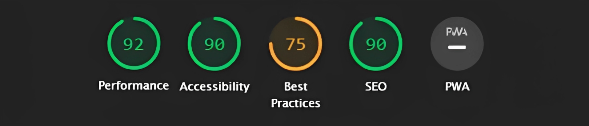
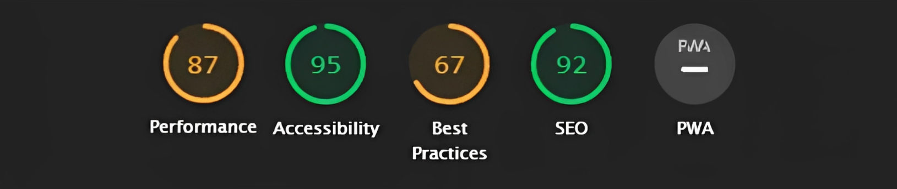
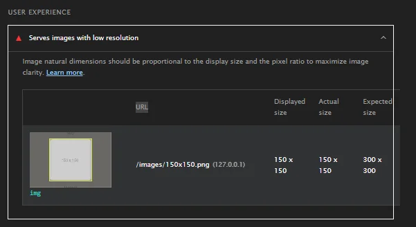
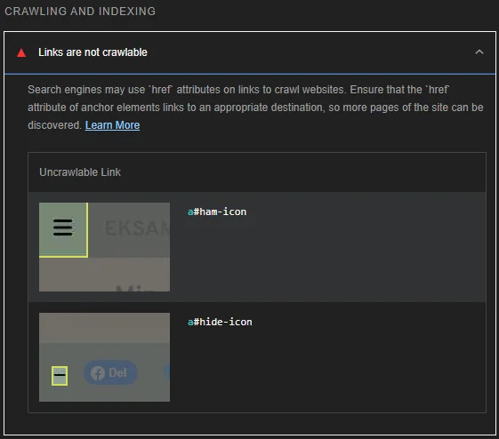
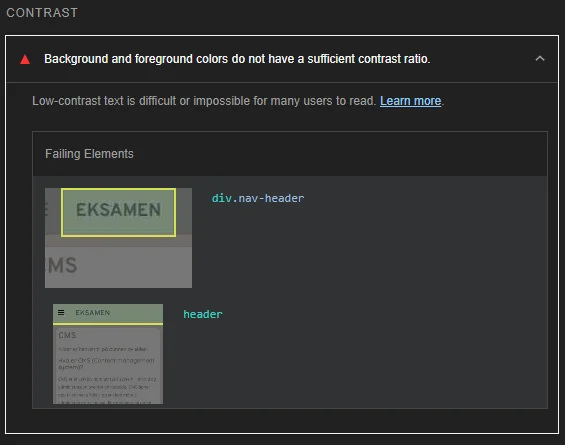
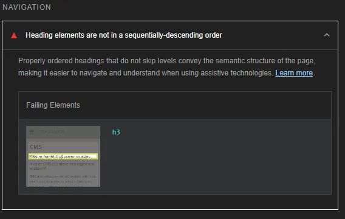
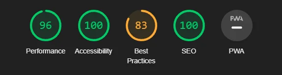
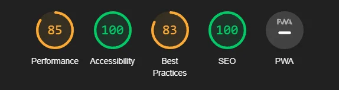
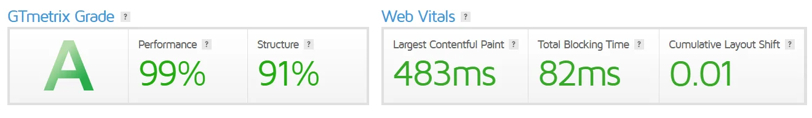

ANALYSE
Tilgjengelighetserklæring med WCAG 2.0 retningslinjer er nederst på siden. Hopp til WCAG 2.0 tabellen
Analyse av UU og SEO
På denne siden vil du kunne lese en oversikt over analyseresultater på denne nettsiden og hvordan jeg har håndtert eventuelle feil eller annet. Jeg brukte oftest Lighthouse til å analysere siden min, lighthouse er forhåndsinnstalert i inspeksjonsverktøyet på de fleste nettlesere. Lighthouse har analysert koden til nettsiden min og gitt meg tilbakemeldinger på hva jeg kan gjøre bedre innenfor Performance, Accessibility (UU), Best Practices og SEO.
 Bildene over er tilsvarende analyse til både PC og mobil, PC til venstre og mobil til høyre. Noen umiddelbare ting man legger merke til er poengsummen på performance og best practices, disse differerer litt mellom mobil og PC. Performance kan lett forklares og skyldes med at mobile enhenter ofte er treigere en PC-er i disse tider. Det er ikke mye forksjell, men det er som regel litt.
Best Practices
Hvorfor best practises sin poengsum er lavere på mobil i forhold til PC skyldes en tilbakemelding jeg kun fikk på mobilanalysen av lighthouse tidligere.
Denne tilbakemeldingen angår placeholder bildene som tydeligvis ansees som for utydelig eller liten. Dette fikset jeg lett ved å kun tildele relevante bilder til de tilsvarende artikkelboksene på hjemsiden. Dette ordnet tilbakemeldingen og ordnet opp på differansen mellom mobil og PC. Resten av tilbakemeldingene jeg fikk på Best practise var relatert til share scriptene til sociale medier. Jeg fant umiddelbart ikke noen fiks på dette, men å bytte nettleser fra Opera til Chrome fjernet en av de og løftet summen min på Best Practise til 83. De to andre tilbakemeldingene finner jeg ikke noen fiks på og får desverre ikke gjort noe med, fordi da får jeg ikke inkludert en av kravene til oppgaven som er sosiale medier share knapper, det er nemlig de som er grunnlaget til tilbakemeldingene i følge lighthouse. Chrome bytte fikk samme resultat på alle sidene.
SEO
Videre til SEO ligger vi på et resultat av 92 som ikke er så værst, men det var et error som jeg fikset fort. Dette var nemlig kun et "Link are not crawlable" error som betyr at en link eller tilsvarende element ikke leder deg til noen side. Lighthouse ga meg en god forklaring på hvilke elementer som ledet til dette.
Jeg fjernet denne tilbakemeldingen ved å gjøre om "a" elementet til en "div". Dette fjernet tilbakemeldingen og ga meg et resultat med 100 poengsum på SEO. endringen fjernet ingen funksjonalitet.
Accessibility
Videre til accessibility der jeg fikk en poengsum på 90 hadde jeg fortsatt 2 tilbakemeldinger som virket relativt lett å fikse. Disse to var fargekontrast og at overskriftene ikke var i rekkefølge, altså at et h3 element var over h2 eller h1. Jeg fikk gode tilbakemeldinger på hvilke kontraster som burde justeres og hvilke overskrifter som var plassert feil.
 Jeg ordnet disse ved å fjerne den feilplasserte overskriften som kun refferte til at det var
kilder på bunnen av siden, jeg følte behovet for denne overskriften ikke vår serlig
nædvendig.
Kontrasten på overskriten endret jeg til slutt i stilarket. Etter at jeg hadde gjort begge
disse
endringene fikk jeg en accessibility poengsum på 100.
For å få 100 accessibility på tvers av alle enheter analyserte jeg også PC siden med
lighthouse
og fikk en separat tilbakemelding som ikke mobilformatet møtte på. Dette var at logoen på
hjemsiden
min ikke hadde en form for alt tekst, dette følte jeg opprinelig den ikke hadde noe behov
for, men jeg endte opp med å legge til en aria-label for å få 100 accessibility.

Å legge til aria-label på logoen fjernet tilbakemeldingen og jeg endte med 100 accessibility
på både PC og mobil.
Jeg brukte videre WebAIM sitt WAVE verktøy for å få end
grundigere analyse av den universelle
utformingen på sidene mine. Ettersom at jeg her implementert alle endringene fra resultatene jeg
fikk fra lighthouse analysene oppgaget WAVE ingen error eller contrast error på de fleste
sidene, men den oppdaget en kontrast error på "kontakt oss" siden.
Jeg antok at opphavet til denne tilbakemeldingen var den hvite teksten på den grønne knappen, så jeg forsøkte å endre fargen på teksten til svart. Endringen av fargen på "send inn" knappen fjernet erroren og etterlot meg med 0 erorr etter WAVE analyser på alle sidene mine.
Performance
Performance aspektet av analysen varierer svært mye, resultatene kan variere fra 80 opp til 96 fra hver analyse, (Mobilresultatene er vanligvis dårligst, PC når høyere resultater som 96 poengsum). Grunnlaget til hvorfor jeg får disse varierende resultatene har jeg fått tilbakemeldinger om av lighthouse, fontawesome, normalize.css og bildestørrelsene mine påvirker hastigheten. fontawesome og normalize.css får jeg ikke gjort så mye med, så jeg gjør det jeg kan og endrer alle bildeformatene fra jpg og png til webp for mer hastighet. Etter endringene av bildeformatet kjørte jeg lighthouse på nytt, men fikk ingen betraktelige endringer i forhold til hastighet.

Hvis vi skal sammenligne resultatene fra starten til slutten av prosessen vil jeg si at det ikke var serlig mye å pirke på, men jeg føler jeg endte med gode resultater. Nedenfor ser du de nye lighthouse resultatene etter implementasjonen av analysekritikken.
 Her er en annen analyse av nettsiden ved bruk av en annen tjeneste:
Jeg brukte nettsiden GTmetrix for å gjennonføre denne
analysen.
Etter videre jobbing på denne eksamenen kjørte jeg noen lighthouse analyser regelmessig i
arbeidet mitt. Dette gjorde jeg kun for å se om noen endringer påvirket resultatene på
sidene
mine. Resultatene endret seg opprinelig ikke etter implementeringene mine, men plutselig
forsvant en av tilbakemeldingene om share knappene til sociale medier. Jeg husker ikke hva
feilmeldingen het, men den endret min best practises poengsum fra 83 til 92! Jeg syntes i
utgangspunket at tilbakemeldingene om share knappene til sosiale medier var rare fordi jeg
hadde
brukt facebook, twitter og pinterest sinde egne ressurser til å generere kode til knappene.
Uansett var det fint at det ordnet seg. Nedenfor vil du se bilde av de nyligste oppdaterte
analyseresultatene for både pc og mobil.
Heuristisk evaluering
Jeg har basert min heuristisk evaluering etter Nielsen Norman Group sitt format. (Nielsen, 2020)
Etter jeg har implementert egne endringer fra analyseresultatene ovenfor skal jeg ta en
heuristisk evaluering på egenhånd for å oppdage ufullkommenheter på nettsidene mine som ikke
analyseverktøyene gjennkjenner. Jeg skal som sagt bruke Nielsen Norman Group sin heuristikkliste
for å evaluere siden min. Alle anbefalingene som denne listen går gjennom er ikke relevant for
nettsiden min siden de ofte omtaler mer omfattende problemer med større og mer kundebaserte
nettsider. Jeg vil derfor kun snakke rundt de punktene jeg føler er relevant for min heuristiske
evaluering av nettsiden min. Punktene som jeg skriver om nedenfor er nødvendigvis ikke knyttet
til noen endring/implementering heller, mange av de er kun drøfting og vurdering av min egen
nettside i forhold til Nielsen Norman Group sine anbefalinger.
#1: Visibility of system status
"The design should always keep users informed about what is going on, through appropriate
feedback within a reasonable amount of time." (Nielsen, 2020)
Denne linjen fra NNG (Nielsen Norman Group) sin egen nettside tilsvarer at nettsiden din burde
ha indikasjoner tilsvarende til hva som skjer eller er relevant av innholdet på siden din.
Nettsiden min inneholder ingen ekstra form for innhold utenom de tilsvarende sidene til
menypunktene i navigasjonsbaren, men jeg gjorde en endring på navigasjonen for å tydeliggjøre
brukeren om hvilken side man er
lokalisert på gjennom kontrastskifte i navigasjonsbaren. Dette vil jeg si er en implentering som
følger NNG sine anbefalinger.
#2: Match between system and the real world
"The design should speak the users' language. Use words, phrases, and concepts familiar to the
user, rather than internal jargon. Follow real-world conventions, making information appear in a
natural and logical order." (Nielsen, 2020)
Dette kriterie anbefaler at nettsiden din følger et internasjonalt format som følger den logiske
strukturen som de fleste er vant til på internettet. Bruk av gjenkjennelige ord og logoer for å
ikke forvirre brukeren.
Nettsiden min følger dette kriterie godt, siden min fremstår
som minimalistisk og tar i bruk gjennkjenelige tjenester for navigering som en navigasjonsbar
og hamburgermeny. Klikkbare knapper på siden min tydeligjøres ikke unormalt og klikkbare linker
er også gjennkjennelige ved bruk av den normale blå fargen. Ellers er det ingenting på siden som
er utenfor det vanlige.
#4: Consistency and standards
"Users should not have to wonder whether different words, situations, or actions mean the same
thing. Follow platform and industry conventions." (Nielsen, 2020)
Hva NNG prøver å få fram med dette punktet på listen deres er at nettsiden din ikke burde være
forvirrende i sammenheng med handlinger og ordbruk på siden din. Nettsiden din burde være
direkte og forsåelig for brukeren, ikke la brukeren din havne i en situasjon hvor den ikke
skjønner hva som skjer.
Jeg føler selv at denne siden er tydelig og minst mulig forvirrende. den er minimalistisk og har
et
format som er gjenkjennelig og ofte sett på majoriteten av nettsider på nettet. Etter min
observasjon er det heller ikke mulig å rote seg bort på nettsiden, den ikke inneholder serlig
mange sider. Alle sidene er også mulig å navigere til og fra gjennom
navigasjonbar/hamburgermeny.
#6: Recognition rather than recall
"Minimize the user's memory load by making elements, actions, and options visible. The user
should
not have to remember information from one part of the interface to another. Information required
to use the design (e.g. field labels or menu items) should be visible or easily retrievable when
needed." (Nielsen, 2020)
"Minimize the user's memory load", dette betyr at brukeren ikke burde måtte huske mye for å
bruke
nettsiden din. Som forklart i sitatet ovenfor er det viktig at brukeren ikke må huske noen form
for informasjon på en av sidene dine som han videre må huske for å kunne forstå eller bruke de
andre sidene
optimalt. Nettsiden din burde heller få brukeren til å gjenkjenne innholdet ditt isteden for å
huske det.
Min nettside er minimalistisk og er tydelig på hva som er klikkbart og eier funksjonalitet for
brukeren, og dette føler jeg at brukeren derfor heller vil gjennkjenne på alle sidene istedet
for å huske de. Alle knapper og linker har tilsvarende farge og utseende gjennom hele siden.
#8: Aesthetic and minimalist design
"Interfaces should not contain information that is irrelevant or rarely needed. Every extra unit
of information in an interface competes with the relevant units of information and diminishes
their relative visibility." (Nielsen, 2020)
I følge dette punktet anbefaler NNG at nettsiden din ikke inneholder irrelevant informasjon som
brukerne ikke har noen bruk for. Uten denne irrelevante informasjonen, men med opplysende og
direkte innhold på siden din vil brukeren finne det han leter etter raskest og nettsiden din vil
føles mer minimalistisk.
Selv, føler jeg at nettsiden min har et minimalistisk design. Jeg har designet nettsiden min til
å
være opplysende men minimalistisk siden første deleksamen, det var dette designet jeg søkte
etter, så jeg føler at nettsiden min følger disse kritereiene godt.
Tabelloversikt over endring/implementering etter analyse (Med analyseresultater)
Oversikten visen resultatene jeg fikk av analysene (FØR), endringene jeg gjorde for å løse problemene (ETTER) og samtlige forbedringer resultatene fikk etter senere analyse.
FØR
ETTER
Bildestørrelse
Små bildestørrelser (67 Best practice)
Anbefalte bildestørrelser (75 Best practice)
Nettleser
Nettleser tull (75 Best practise)
Chrome fix (83 Best practise)
Crawlable link
"a" element som ikke var "crawlable" (92 SEO)
Endret "a" element til "div" (100 SEO)
Fargekontrast
Svak konstrast på mobiloverskrift (90 Accessibility)
God kontrast på mobiloverskrift (96 Accessibility)
Overskrift
Feilplassert overskrift (96 Accessibility)
Rett plasserte overskrifter (100 Accessibility)
Aria-label
Logo hadde ingen aria-label (PC 96 Accessibility)
La til aria-label (PC 100 Accessibility)
Bildeformat
Mange jpg/png filer med treig hastighet
Endret filene til webp (Ingen betraktelige endringer)
Lokalisering
Brukeren viste ikke nødvendigvis hvilken side han var lokalisert på (Heuristisk evaluering)
Endret fargen på det menypunktet du nåværende er på til hvit og økte skriftstørrelsen. (Heuristisk evaluering)
Tilgjengelighetserklæring (WCAG 2.0 retningslinjer)
Nedenfor finner du en tabell som inneholder alle WCAG 2.0 retningslinjene (W3C, 2019) samt suksesskriteriene som denne nettsiden følger.
Retningslinjer
Suksesskriterier
Nivå
1.1 Tekstalternativ
1.1.1 Ikke-tekstlig innhold (Nivå A)
1.2 Tidsbaserte medier
1.3 Mulig å tilpasse
1.3.1 Informasjon og relasjoner (Nivå A)
1.3.2 Meningsfylt rekkefølge (Nivå A)
1.3.3 Sensoriske egenskaper (Nivå A)
1.4. Mulig å skille fra hverandre
1.4.1 Bruk av farge (Nivå A)
1.4.3 Kontrast (minimum, Nivå AA)
1.4.4 Endring av tekststørrelse (Nivå AA)
2.1 Tilgjengelig med tastatur
2.1.1 Tastatur (Nivå A)
2.1.2 Ingen tastaturfelle (Nivå A)
2.2 Nok tid
2.3 Anfall
2.3.1 Terskelverdi på maksimalt tre glimt (Nivå A)
2.3.2 Tre glimt (Nivå AAA)
2.4 Navigerbar
2.4.3 Fokusrekkefølge (Nivå A)
2.4.4 Formål med lenke (i kontekst, Nivå A)
2.4.6 Overskrifter og ledetekster (Nivå AA)
2.4.7 Synlig fokus (Nivå AA)
2.4.8 Lokalisering (Nivå AAA)
3.1 Leselig
3.1.1 Språk på siden (Nivå A)
3.2 Forutsigbar
3.2.2 Inndata (Nivå A)
3.2.3 Konsekvent navigering (Nivå AA)
3.2.4 Konsekvent identifikasjon (Nivå AA)
3.3. Inndatahjelp
3.3.2 Ledetekster eller instruksjoner (Nivå A)
4.1 Kompatibel
4.1.1 Parsing (oppdeling, Nivå A)
4.1.2 Navn, rolle, verdi (Nivå A)
Kilder:
- W3C, Eggert, E (2019, 4. Oktober) - How to Meet WCAG: https://www.w3.org/WAI/WCAG21/quickref/?versions=2.0#qr-seizure-three-times
- uutilsynet - WCAG sortert etter prinsipp: https://www.uutilsynet.no/wcag-standarden/wcag-sortert-etter-prinsipp/713
- Nielsen, J. (2020, 15. november) - 10 Usability Heuristics for User Interface Design: https://www.nngroup.com/articles/ten-usability-heuristics/